This paper describes a novel and practical Japanese parser that uses decision trees. First, we construct a single decision tree to estimate modification probabilities, how one phrase tends to modify another. Next, we introduce a boosting algorithm in which several decision trees are constructed and then combined for probability estimation. The constructed parsers are evaluated using the EDR Japanese annotated corpus. The single-tree method significantly outperforms the conventional Japanese stochastic methods. Moreover, the boosted version of the parser is shown to have great advantages; (1) a better parsing accuracy than its single-tree counterpart for any amount of training data and (2) no over-fitting to data for various iterations. The presented parser, the first non-English stochastic parser with practical performance, should tighten the coupling between natural language processing and machine learning.
stochastic parsing, decision tree, boosting, dependency grammar, corpus linguistics
With the recent availability of large annotated corpora, there has been growing interest in stochastic parsing methods so as to replace labor-intensive rule compilation by automated learning algorithms. Conventional parsers with practical levels of performance require a number of sophisticated rules that have to be hand-crafted by human linguists. It is time-consuming and cumbersome to maintain these rules for two reasons.
The stochastic approach, on the other hand, has the potential to overcome these difficulties. Because it induces stochastic rules to maxilnize overall performance against training data, it not only adapts to any application domain but also avoids over-fitting to the data. Now that machine learning techniques are mature enough to deal with real-world applications, it is promising to try to construct practical parsers by using machine learning methods. In the late 80s and early 90s, the induction and parameter estimation of probabilistic context free grammars (PCFGs) from corpora were intensively studied. Because these grammars comprise only nonterminal and part-of-speech tag symbols, their performances were not good enough to be used in practical applications (Charniak, 1993). A broader range of information, in particular lexical (i.e., word-level) information, was found to be essential in disambiguating the syntactic structures of real-world sentences.
The SPATTER parser (Magerman, 1995) replaced the pure PCFG with transformation (extension and labeling) rules that are augmented with a number of lexical attributes. The parser controlled the applications of each rule by using the lexical constraints induced by using a decision tree algorithm (Breiman et al., 1984). The extension can take on any of the following five values: right, left, up, unary, and root, each representing an extension of a syntactic tree node. The decision tree model is grown using the following questions, where X is either word, part-of-speech, label, or extension, and Y is either left or right. The SPATTER parser attained 87% an accuracy and was the first to make stochastic parsers a practical choice.
Another type of high-precision parser, one based on dependency analysis, was introduced by Collins (1996). Dependency analysis first segments a sentence into syntactically meaningful sequences of words and then considers the modification of each segment. Figure 1 illustrates a sample dependency structure. Each modification is represented as a triple of nonterminal symbols with a direction (right or left). For example, NP S VP1 constructed from [John Smith ] and announced means that a NP (John Smith ) modifies a VP (announced his resignation ) and constructs a S. Collins' parser computes the likelihood that each segment modifies the other by using large corpora. These modification probabilities are conditioned by the head words of the two segments,2 the distance between them, and other syntactic features.
|
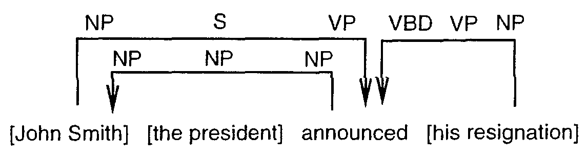 |
Although these two parsers have shown a similar performance, the keys to their successes are slightly different. The SPATTER parser performance greatly depends on the feature selection ability of the decision tree algorithm rather than its linguistic representation. On the other hand, dependency analysis plays an essential role in Collins' parser for efficiently extracting information from corpora.
In this paper, we describe a practical Japanese dependency parser that uses decision trees. The task of the parser is to output bracketed text from an input sequence of Japanese characters.
In the Japanese language, dependency analysis has been shown to be powerful because segment (bunsetsu) order in a sentence is relatively free compared to European languages. Japanese dependency parsers generally proceed in three steps.
| 1. | Segment a sentence into a sequence of bunsetsu. | |
| 2. | Prepare a modification matrix, each value of which represents how one bunsetsu is likely to modify another. | |
| 3. | Find optimal modifications in a sentence by dynamic programming. |
The most difficult part is the second step, how to construct a sophisticated modification matrix. With conventional Japanese parsers, the linguist must classify the bunsetsu and select appropriate features to compute modification values. The parsers also suffer from application domain diversity and the side effects of specific rules.
Stochastic dependency parsers like Collins', on the other hand, define a set of attributes and condition the modification probabilities by all of the attributes regardless of the bunsetsu type. These methods can encompass only a small number of features if the probabilities are to be precisely evaluated from a finite number of data. Our method, in contrast, constructs a more sophisticated modification matrix by using decision trees. It automatically selects a sufficient number of significant attributes according to the bunsetsu type. We can use arbitrary numbers of attributes to potentially increase the parsing accuracy.
Natural languages are full of exceptional and colloquial expressions, and it is difficult for machine learning algorithms, as well as human linguists, to judge whether a specific rule is relevant in terms of the overall performance. Because the maximal likelihood estimator (MLE) emphasizes the most frequent phenomena, an exceptional expression is placed in the same class as a frequent one. To tackle this problem, we investigate a mixture of sequentially generated decision trees. Specifically, we use the Adaboost algorithm (Freund & Schapire, 1997) which iteratively performs two procedures:
| 1. | construct a decision tree based on the current data distribution | |
| 2. | update the distribution by focusing on data not well explained by the constructed tree |
The final modification probabilities are computed by mixing all of the decision trees according to their performance. The sequential decision trees gradually change from broad coverage to specific exceptional trees that cannot be captured by a general tree. In other words, the method incorporates not only general expressions but also infrequent specific ones.
The rest of this paper is organized as follows. Section 2 summarizes our dependency analysis for the Japanese language. Section 3 introduces our feature setting for learning and explains decision tree models that compute modification probabilities. Section 4 presents experimental results obtained by using the EDR Japanese annotated corpora. Section 5 relates our parser research to other research from both natural language processing and machine learning viewpoints. FinalIy, Section 6 concludes the paper.
This section overviews dependency analysis in the Japanese language. The parser generally performs the following three steps.
| 1. | Segment a sentence into a sequence of bunsetsu. | |
| 2. | Prepare a modification matrix, each value of which represents how one bunsetsu is likely to modify the other. | |
| 3. | Find optimal modifications in a sentence by a dynamic programming technique. |
Because there are no explicit delimiters between words in Japanese, input sentences are first word segmented, part-of-speech tagged, and then chunked into a sequence of segments (bunsetsu). Bunsetsu basically consists of a set of non-function words + function words, although its definition greatly depends on the user and usage. In our system, word segmentation and part-of-speech tagging are performed by the Japanese morphological analyzing program Chasen (Matsumoto et al., 1997). Then, the output from the tagger is passed to an automatic bunsetsu segmenter (developed by Fujio & Matsumoto (1997)). The bunsetsu segmenter is implemented in Perl and contains 1311 rules in the form of regular expressions to determine the bunsetsu boundaries. The first step yields, for the following example, the sequence of bunsetsu displayed below. The Japanese expressions in the parenthesis represent the internal structures of the bunsetsu (word segmentations). Note here that postpositional particles (e.g., GA, WO, NO, and NI) provide much of the functional information that word order typically provides in English.
Example.
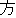

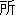
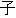


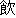

| (()(())) | (()()) | (()()) | (()()) | (()()) | (()() | ||||||
| kinou-no | yuugata-ni | kinjo-no | kodomo-ga | wain-wo | nomu+ta | ||||||
| yesterday-NO | evening-NI | neighbor-NO | children-GA | wine-WO | drink +PAST | ||||||
| Yesterday | evening , | the neighboring | children | drank | the wine |
The second step of parsing is to construct a modification matrix whose values represent the likelihood that one bunsetsu modifies another in a sentence.
In the Japanese language, almost all practical parsers assume the following two constraints (Yoshida, 1972). Although there are a small number of exceptions (i.e., inversion) for these two constraints, the majority of them can be avoided by devising corpus annotations and bunsetsu definitions. These two constraints with careful bunsetsu definitions can improve the parsing performance by cutting off excessive modification candidates.
| 1. | Every bunsetsu except the last one modifies exactly one posterior bunsetsu. | |
| 2. | No modification crosses other modifications in a sentence. |
Table 1 illustrates a modification matrix for the example sentence. In the matrix, the columns and rows represent anterior (preceding) and posterior (following) bunsetsu, respectively. For example, the first bunsetsu 'kinou-no ' modifies the second 'yuugata-ni ' with a score of 0.70 and the third 'kinjo-no ' with a score of 0.07. The aim of this paper is to generate a modification matrix by using decision trees.
| kinou-no | |||||
| yuugata-ni | 0.70 | yuugata-ni | |||
| knjo-no | 0.07 | 0.10 | kinjo-no | ||
| kodomo-ga | 0.10 | 0.10 | 0.70 | kodomo-ga | |
| wain-wo | 0.10 | 0.10 | 0.20 | 0.05 | wain-wo |
| nomu-ta | 0.03 | 0.70 | 0.10 | 0.95 | 1.00 |
The final step of parsing optimizes the entire dependency structure by using the values in the modification matrix. A probabilistic bottom-up chart parsing algorithm (Kay, 1980; Charniak, 1993) is adopted to determine the optimal dependencies, and produce the best parse.
Before going into the details of our method, we introduce here the notations that will be used in this paper. Let S be the input sentence. S comprises a bunsetsu set B of length m ({b 1 , ... , bm }) in which bi represents the i th bunsetsu. We define D to be a modification set; D = {mod (1) , ... , mod (m-1)}, in which mod (i ) is the bunsetsu which is modified by the ith bunsetsu. Because of the first assumption above, the length of D is always m-1. Therefore, D fully specifies the structure ofthe parsed text. Using these notations, the result of the third step for the example can be given as D = {2, 6, 4, 6, 6} as displayed in figure 2.
|
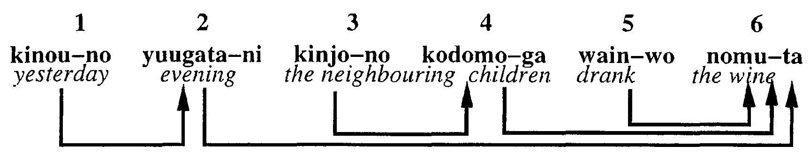 |
This section explains the concrete feature set we use for learning.
Training and test instances for the decision tree algorithm contain 13 features that represent any unordered combination of two bunsetsu, bi and bj , in a sentence: five features describe bunsetsu bi (features 1-5 in Table 2); five features describe bunsetsu b1 (features 1-5 in Table 2); the remaining three features describe the relationship between bi and bj (features 6-8 from Table 2). The class value for each instance (i.e., yes or no ) indicates whether or not a modification relation exists between bi and bj .
| No. | Two bunsetsu | No. | Others | |
| 1 | Lexical information of head word | 6 | Distance between two bunsetsu | |
| 2 | Part-of-speech of head word | 7 | Particle 'wa' between two bunsetsu | |
| 3 | Type of bunsetsu | 8 | Punctuation between two bunsetsu | |
| 4 | Punctuation | |||
| 5 | Parentheses |
Both No. 1 and No. 2 concern the head word of the bunsetsu. No. 1 takes values of frequent words or thesaurus categories (NLRI, 1964). No. 2, on the other hand, takes values of part-of-speech tags. No. 3 deals with bunsetsu types which consist of functional word chunks or the part-of-speech tags that dominate the bunsetsu's syntactic characteristics. No. 4 and No. 5 are binary features and correspond to punctuation and parentheses, respectively. No. 6 represents how many bunsetsu exist between the two bunsetsu. Possible values in our setting are A (0), B (0 4), and C (5). No. 7 deals with the post-positional particle 'wa' which greatly influences the long distance dependency of subject-verb modifications. Finally, No. 8 addresses the punctuation between the two bunsetsu. The detailed values of each feature type are summarized in the Appendix.
Table 3 illustrates the instances generated from the example sentence discussed in Section 2. Each row in the table corresponds to one instance. t-noun and c-noun in the table represent a temporal noun and a common noun, respectively. Note also that no in italic and no in Roman mean the Japanese post positional particle 'no ' and a binary value 'no ' , respectively. In this setting, the decision tree algorithm automatically and consecutively selects the significant features for discriminating modify/non-modify (yes/no) relations.
| Angerior bunsetsu | Posterior bunsetsu | pair | Class | |||||||||||||
| 1 | 2 | 3 | 4 | 5 | 1 | 2 | 3 | 4 | 5 | 6 | 7 | 8 | ||||
| kinou | t-noun | no | no | no | yuugata | c-noun | ni | no | no | A | no | no | yes | |||
| kinou | t-noun | no | no | no | kinjo | c-noun | no | no | no | B | no | no | no | |||
| kinou | t-noun | no | no | no | kodomo | c-noun | ga | no | no | B | no | no | no | |||
| kinou | t-noun | no | no | no | wain | c-noun | wo | no | no | B | no | no | no | |||
| kinou | t-noun | no | no | no | nomu | verb | verb | no | no | B | no | no | no | |||
| yuugata | c-noun | ni | no | no | kinjo | c-noun | no | no | no | A | no | no | no | |||
| yuugata | c-noun | ni | no | no | kodomo | c-noun | ga | no | no | B | no | no | no | |||
| yuugata | c-noun | ni | no | no | wain | c-noun | wo | no | no | B | no | no | no | |||
| yuugata | c-noun | ni | no | no | nomu | verb | verb | no | no | B | no | no | yes | |||
| kinjo | c-noun | no | no | no | kodomo | c-noun | ga | no | no | A | no | no | yes | |||
| kinjo | c-noun | no | no | no | wain | c-noun | wo | no | no | B | no | no | no | |||
| kinjo | c-noun | no | no | no | nomu | verb | verb | no | no | B | no | no | no | |||
| kodomo | c-noun | ga | no | no | wain | c-noun | wo | no | no | A | no | no | no | |||
| kodomo | c-noun | ga | no | no | nomu | verb | verb | no | no | B | no | no | yes | |||
| wain | c-noun | wo | no | no | nomu | verb | verb | no | no | A | no | no | yes | |||
The stochastic dependency parser assigns the most plausible modification set Dbest to a sentence in terms of the training data distribution.
Dbest = argmaxD P (D |S ) = argmaxD P (D |B )
Although modifications in a sentence are in fact dependent on each other as revealed in the two constraints in Section 2, it is generally difficult to efficiently determine what range of modifications should be considered in the online computation of the modification probability of two bunsetsu. In addition, the learning of such dependencies should require large amounts of training data. Therefore, we adopt an alternative independence assumption (as usual) for efficient learning from a limited amount of training data and for efficient computation.
| m-1 | ||
| P (D |B ) 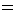 |
P (yes |bi , bj , fij ) (1) | |
| i = 1 |
By assuming the independence of modifications, P (D | B ) can be transformed as Eq. (1). P (yes |bi , bj , fij ) means the probability that a pair of bunsetsu bi and bj have a modification relation given the feature sets fij defined in Table 2. We use decision trees to dynamically select appropriate features for each combination of bunsetsu (as shown in Table 3) from fij .
Let us first consider the single tree case. We slightly changed C4.5 (QuinIan, 1993) programs to be able to extract class frequencies at every node in the decision tree because our task is regression rather than classification. Figure 3 is the simplified and unpruned decision tree generated from the training data shown in Table 3. Each node and edge in the tree is labeled with a feature name and its value, respectively. They indicate that the data are split by the feature according to its values. The feature and values are selected so as to maximally separate class labels of the data. The finally separated class values are attached to each leaf node of the tree. In the current example, the decision tree first selects the feature Distance at the top node. If its value is A and the value ofthe next feature anterior type is no, the class of data is then determined as yes. The rest of the data can be correctly classified in the same way. Note here that we can extract the class frequencies from each node. For example, the circled node of depth 1 stores five examples of Table 3 whose distance values are A. The class frequency at this node is (yes, no) = (3, 2). We can therefore compute at this node the probability of yes as 3/(3 + 2) = 0.6.
| PDT(yes | bi , bj , fij ) | ||
| P (yes | bi , bj, fij ) | (2) | |
| ---------------------------------------- | ||
 mk>i PDT(yes | bi, bk, fik ) mk>i PDT(yes | bi, bk, fik ) | ||
|
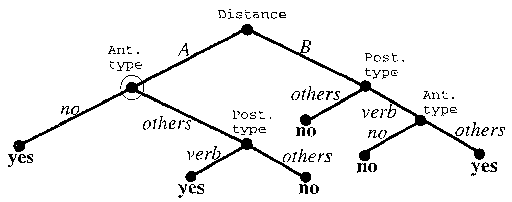 |
In the case ofthepruned decision tree, by using the class frequencies, we can also compute the probability PDT(yes | bi , bj , fij ) which is the Laplace estimate of the empirical likelihood that bi modifies bj at the leaf of the constructed decision tree DT. Note that it is necessary to normalize PDT(yes | bi , bj , fij ) to approximate P (yes | bi , bj , fij ). By considering all candidates posterior to bi , P (yes | bi , bj , fij ) is computed using a heuristic rule (2). Such a normalization technique is also utilized by Collins (1996). It is of course reasonable to normalize class frequencies instead of the probability PDT(yes | bi , bj , fij ). Equation (2) tends to emphasize long distance dependencies more than is true for frequency-based normalization.
Let us extend the above to use a set of decision trees. As briefiy mentioned in Section 1 , a number of infrequent and exceptional expressions appear in any natural language phenomenon; they deteriorate the overall performance of application systems. It is also difficult for automated learning systems to detect and handle these expressions because exceptional expressions are placed in the same class as frequent ones. To tackle this difficulty, we generate a set of decision trees by introducing the Adaboost (Freund & Schapire, 1997) algorithm illustrated in figure 4. The algorithm first sets the weights to 1 for all (training) examples (step 2 in figure 4) and repeats the following two procedures T times (step 3 in figure 4).
| 1. | A decision tree is constructed by using the current weight vector ((A) in figure 4) | |
| 2. | The same training data are then parsed by using the tree and the weights of correctly handled data are reduced ((B) and (C) in figure 4) |
The final probability set hf is then computed by mixing T trees according to their performance (step 4 in figure 4). Using hf instead of PDT (yes |bi , bj , fij ) in Eq. (1) generates a boosted version of the dependency parser. The sequential decision trees gradually change from broad coverage to specific exceptional trees that cannot be captured by a general tree. In other words, the method incorporates not only general expressions but also infrequent specific ones.
| ||||||||||||||||||||||||||||||||||||||||||||||||||||||||
We evaluated the proposed parser using the EDR Japanese annotated corpus (EDR, 1995). The experiment consisted of two parts. One evaluated the single-tree parser and the other the boosting counterpart. In the rest of this section, parsing accuracy refers only to precision; this means out of all the individual dependencies the system assigns, how many of those are correct in terms of the annotated corpus.
We do not show recall because we assume every bunsetsu modifies only one posterior bunsetsu. The features used for learning were non head-word features (i.e., types 2 to 8 in Table 2). Section 4. 1 .4 investigates lexical information of head words such as frequent words and thesaurus categories. Before going into the details of the experimental results, we summarize here how the training and test data were constructed.
| 1. | After all of the sentences in the EDR corpus were word-segmented and part-of-speech tagged, they were then chunked into a sequence of bunsetsu. | |
| 2. | All bunsetsu pairs were compared with the EDR bracketing annotation (correct segmentations and modifications). If a sentence contained a pair inconsistent with the EDR annotation, the sentence was removed from the data. | |
| 3. | All data examined (total number of sentences: 207,802, total number of bunsetsu: 1,790,920) were divided into 20 files. The training and test data were completely differentiated. The training data (50,000 sentences) were the first 2500 sentences of the 20 files. The test data (10,000 sentences) were the 2,501st to 3,000th sentences of each file. |
Because there are no explicit delimiters between words in Japanese, the primary task is to word segment and part-of-speech tag the input sentences. The part-of-speech information contained in the EDR corpus is too coarse to be used in parsing. We hence employed only bracketing information of the corpus. We used for the POS tagging a Japanese morphological analyzing program Chasen (Matsumoto et al., 1997) to make use of the fine-grained tag information to address the syntactic ambiguities. After the part-of-speech tagging, a sequence of bunsetsu was automatically generated by utilizing the automatic bunsetsu segmenter developed by Fujio and Matsumoto (1997). The bunsetsu segmenter is implemented in Perl and contains 1,311 segmentation rules.
The second step detected the modification relations existing in the EDR corpus. Due to the difference between our definition of bunsetsu and that used in the EDR corpus, some discrepancies in the bunsetsu boundaries occurred. We removed from the data those sentences that contained the boundary discrepancies. The errors in the part-of-speech tagging were handled as they were by a learning algorithm. Because the detection of bunsetsu boundaries is much easier than part-of-speech tagging, the removal of inconsistent sentences has little effect on the use of the resulting parser in which all bunsetsu segmentations are performed according to our bunsetsu definition.
The third step is the construction of the completely disjoint training and test data for learning. For both data, we took the same numbers of sentences from 20 different files in order to avoid imbalances in the genres of the texts.
In the single tree experiments, we evaluated the following four properties of the new dependency parser.
Table 4 summarizes the parsing accuracy with various confidence levels of pruning. The number of training sentences was 10,000. In C4.5 programs, a larger value of confidence means weaker pruning and 25% is commonly used in various domains (Quinlan, 1993). Our experimental results show that 75% pruning attains the best performance, i,e., weaker pruning than usual. In the remaining single tree experiments, we used the 75% confidence level. Although strong pruning treats infrequent data as noise, parsing involves many exceptional and infrequent modifications as mentioned before. Our result means that information included only in small numbers of samples is useful for disambiguating the syntactic structure of sentences.
| Confidence level (%) | 25 | 50 | 75 | 95 |
| Parsing accuracy (%) | 82.01 | 83.43 | 83.52 | 83.35 |
Table 5 and figure 5 show how the number of training sentences influences the parsing accuracy for the same 10,000 test sentences. They illustrate the following two characteristics of the learning curve.
We will discuss the maximum accuracy of 84.33%. Compared to recent stochastic English parsers that have yielded 86 to 87% accuracy (Collins, 1996; Magerman, 1995), our result is not so attractive at a glance. The main reason behind this lies in the difference between the two corpora used: Penn Treebank (Marcus, Santorini, & Marcinkiewicz, 1993) and EDR corpus (EDR, 1995).
| Number of training sentences | 3000 | 6000 | 10000 | 20000 | 30000 | 50000 |
| Parsing accuracy (%) | 82.07 | 82.70 | 83.52 | 84.07 | 84.27 | 84.33 |
|
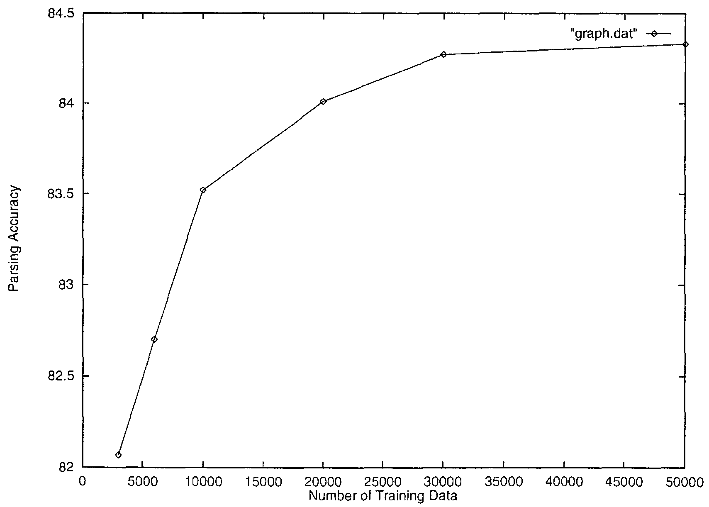 |
Penn Treebank was also used to induce part-of-speech (POS) taggers because the corpus contains very precise and detailed POS markers as well as bracket annotations. In addition, English parsers incorporate the syntactic tags that are contained in the corpus. The EDR corpus, on the other hand, contains only coarse POS tags.
We had to introduce a Japanese POS tagger (Matsumoto et al., 1997) to make use of finegrained information for disambiguating syntactic structures. Only the bracket information in the EDR corpus was considered. We conjectured that the difference between the parsing accuracies was due to the difference of the corpus information available. Other research seems to support the conjecture.
Fujio and Matsumoto (1997) constructed another EDR-based dependency parserby using a similar method to Collins (1996). The performance of the parser was 80.48% precision. Furthermore, the features they used were exactly the same as ours although the possible values of each feature slightly differed. They also employed the same part-of-speech tagger and bunsetsu segmenter. Although we do not exactly know what portion ofthe EDR corpus was used as their 200,000 training and 10,000 test sentences, a comparison of the two parsers gives some indication for the characteristics of the EDR corpus because of the great similarity in our settings. The two parsers' difference in performance probably arises mainly from the feature selection ability of the decision tree algorithm.
We will now summarize the significance of each non head-word feature introduced in Section 3. The influence ofthe lexical information of head words will be discussed in the next section. Table 6 illustrates how the parsing accuracy is reduced when each feature is removed. The number of training sentences was 10,000. In the table, ant and post represent the anterior and the posterior bunsetsu, respectively.
Table 6 clearly demonstrates that the most significant features are anterior bunsetsu type and distance between the two bunsetsu. This result may partially support an often used heuristic, that the bunsetsu modification distance be as short range as possible, provided the modification is syntactically possible. In particular, we need to concentrate on the types of bunsetsu to attain a higher level of accuracy. Most features contribute, to some extent, to the parsing performance. In our experiment, information on parentheses has no effect on the performance. The reason may be that EDR contains only a small number of parentheses. One exception in our features is anterior POS of head. We currently hypothesize that this drop in accuracy arises from two reasons.
| Feature | Accuracy decrease (%) |
| ant POS of head | 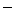 0.07 |
| ant bunsetsu type | 9.34 |
| ant punctuation | 1.15 |
| ant parentheses | 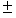 0.00 |
| post POS of head | 2.13 |
| post bunsetsu type | 0.52 |
| post punctuation | 1.62 |
| post parentheses | 0.00 |
| distance between two bunsetsu | 5.21 |
| punctuation between two bunsetsu | 0.01 |
| 'wa' between two bunsetsu | 1.79 |
We focused on the head-word feature by testing the following four lexical sources with the 10,000 training sentences. The first and the second are the 100 and 200 most frequently occurring words. The third and the fourth are derived from a broadly used Japanese thesaurus, Word List by Semantic Principles (NLRI, 1964). Level 1 and Level 2 classify words into 15 and 67 categories, respectively.
| 1. | 100 most frequent words | |
| 2. | 200 most frequent words | |
| 3. | Word List Level 1 | |
| 4. | Word List Level 2 |
Table 7 displays the parsing accuracy when each of the above four head word lexical information was used in addition to the previous features. In all cases, the performance was worse than 83.52% which was attained without them. More surprisingly, more head word information yielded a poorer performance.
| Head word information added | 100 words | 200 words | Level 1 | Level 2 |
| Parsing accuracy (%) | 83.34 | 82.68 | 82.51 | 81.67 |
Why does lexical information not improve the parsing accuracy even though it has been reported to be very effective for parsing European languages? In the Japanese language, functional words such as post positional particles offer stronger clues for dependency structures than is true in European languages. Note here that these most influential word forms are utilized in another feature, type of bunsetsu (No. 3 in Table 2). The other lexical information may have to be more elaborate to further improve the parsing accuracy of Japanese texts. It may be helpful to incorporate more structured lexical information (case frame information) as done by Collins (1997). We briefiy discuss problems involved in the word statistics and thesaurus information we used in turn.
For frequently occurring words, there remains the possibility that the performance was worsened because we considered directly a limited number (100 and 200) of words. Other research (Fujio & Matsumoto, 1997) has reported that consideing all content words with the same smoothing technique as Collins slightly improves the parsing accuracy.
The preprocessing of the head word co-occurrence might be helpful even for our decision tree learning method. For example, a feature used for learning may be a quantized co-occurrence probability between two head words. Anyway, these two results indicate that word statistics does not have as strong an impact in parsing the EDR corpus as it does in European language corpora. The potential reason for the difference may be that the EDR corpus comprises more diverse genres of texts than Penn Treebank (Wall Street Journal articles). We need further research to test this possibility.
The result from Word List by Semantic Principles involves more sensitive and complicated problems. First, the categories of the thesaurus may be too coarse to be used in parsing. Second, the entries of the thesaurus contain only 30,000 words. These two shortcomings of the thesaurus may deteriorate the overall performance. Therefore, further investigation of other thesauri (Ikehara, Yokoo, & Miyazaki, 1991) and clustering techniques (Charniak, 1997) might improve the parsing performance.
In summary, it may now be safely said, at least for the Japanese corpus, that we cannot expect lexical information of content words to always improve the performance.
This section reports experimental results on the boosting version of our parser. In all experiments, pruning confidence levels were set to 55%. Table 8 and figure 6 show the parsing accuracy when the number of training examples was increased. Because the number of iterations in each data set changed between 5 and 8, we will show the accuracy by combining the first five decision trees. In figure 6, the dotted line plots the learning of the single tree case (identical to figure 5) for reader convenience. The characteristics of the boosted version can be summarized as follows compared to the single tree version.
| Number of training sentences | 3000 | 6000 | 10000 | 20000 | 30000 | 50000 |
| Parsing accuracy (%) | 83.10 | 84.03 | 84.44 | 84.74 | 84.91 | 85.03 |
|
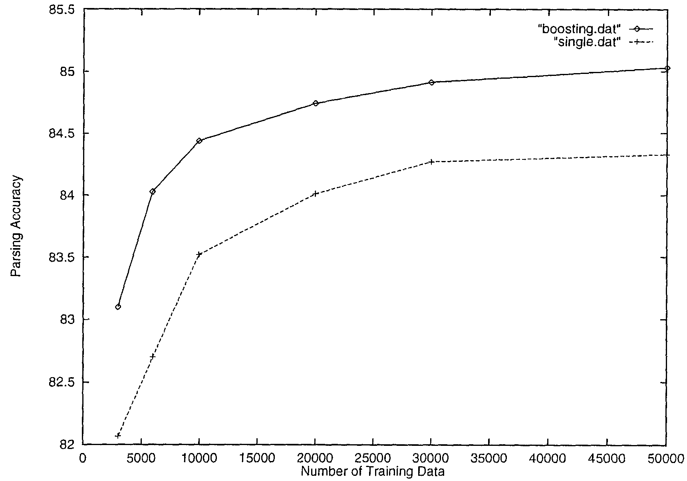 |
Next, we discuss how the number of iterations influences the parsing accuracy. Table 9 shows the parsing accuracy for various iteration numbers when 50,000 sentences were used as the training data. The results have two characteristics.
| Number of iteration | 1 | 2 | 3 | 4 | 5 | 6 |
| Parsing accuracy (%) | 84.32 | 84.93 | 84.89 | 84.86 | 85.03 | 85.01 |
We first relate our work to other research in the parsing community. Although recent sophisticated English parsers (Magerman, 1995, Charniak, 1997) have replaced PCFG with transformation (extension and labeling) rules that are augmented with several attributes (in particular, lexical information), we adopt dependency analysis because the word order in Japanese, particularly the bunsetsu order, is relatively free compared to European languages. Our approach is, in spirit, similar to Collins' dependency-based English parser. The main difference lies in the feature selection process. Collins' type parser (Collins, 1996; Fujio & Matsumoto, 1997) predefines a set of features and conditions the modification probabilities by all of the attributes regardless of the bunsetsu type. The method can incorporate only a small number of features to precisely evaluate parameters from a finite amount of data.
Our decision tree method offers more sophisticated feature selection which automatically detects the most significant types of attributes according to the bunsetsu type. We can therefore make use of arbitrary numbers of attributes that may contribute to the parsing accuracy. These potential features for learning have been enumerated in the many papers on hand-compiled parsers. For example, Kameda (1996) considers many features (types of characters, similarity of bunsetsu sequence, etc.). Collins incorporates subcategorization frames in his extended generative model (Collins, 1997) and reports a 2.3% improvement in performance over his dependency model (Collins, 1 996). Such structured lexical information should be useful in our decision tree based parsers.
There are also some interesting points from the machine learning viewpoint. Various kinds of re-sampling techniques have been studied in statistics (Efron, 1979; Efron & Tibshirani, 1993) and machine learning (Breiman, 1996; Hull, Pedersen, & Sch\"utze, 1996; Freund & Schapire, 1997). The Adaboost method was designed to construct a high-performance predictor by iteratively calling a weak learning algorithm (one slightIy better than random guessing). An empirical work has reported that the method greatly improves the performance of the decision-tree, k-nearest-neighbor, and other learning methods (Freund & Schapire, 1996; Drucker & Cortes, 1996). In the context of natural language processing, Haruno & Matsumoto (1997) has reported that the Adaboost improves the performance of their lexicalised Japanese part-of-speech tagger that makes use of hierarchical context trees (Rissanen, 1983). However, most of these experiments were done with a small number of examples and no asymptotic results were reported.
We tested tIIe proposed algorithm by using one million pieces of training data (50,000 sentences) in a real-world parsing task. Our results confirmed the usefulness of the Adaboost algorithm both in the rapidity of the learning curve improvement and in an improved performance after enough data had been given to the parser.
The following two theorems (Schaipre et al., 1997; Bartlett, 1998) may be worth mentioning in the context of natural language processing. The first theorem is relevant for any voting-based classification method such as boosting and bagging (Breiman, 1996). It explains the generalization error of any voting algorithm in terms of the margin (Vapnik, 1995; Cortes & Vapnik, 1995) (no dependence on the number of iterations). The second theorem gives the probability bound of the small margin in terms of the training errors of the base hypotheses. The margin is intuitively the distance between an example and a classification boundary. Therefore, the greater the margin is, the easier the classification becomes.
From the two theorems, the Adaboost algorithm is found to produce a larger margin hypothesis on the training example set (Theorem 2) and then to yield smaller generalization errors (Theorem 1). It can therefore deal with the originally small-margin instances which correspond to the infrequent and difficult expressions from the viewpoint of natural language processing (NLP). Further research will be promising in relating NLP and margin-related learning algorithms such as Adaboost and Support Vector Machine (Vapnik, 1995; Cortes & Vapnik, 1995).
Let H denote the space from which each base hypothesis is chosen; a base hypothesis h H is a mapping from an instance space X to class {-1 , +1}. We assume that examples are generated independently at random according to some fixed but unknown distribution D over X {-1, +1}. The training set is a list of m pairs S = (x1, y1) , ..., (xm , ym ) chosen according to D. We use P (x ,y ) D [A ] to denote the probability of the event A when the example (x , y ) is chosen according to D and P (x , y ) S [A ] to denote the probability with respect to choosing an example uniformly at random from the training set. We abbreviate these by PD [A ] and Ps [A ].
The majority vote rule that is associated with f gives the wrong prediction on the example (x , y ) only if yf (x ) 0. Also, the margin (feasibility of classification) of an example (x , y ) in this case is simply yf (x ).
Theorem 1 states that with high probability, the generalization error of any majority vote hypothesis can be bounded in terms of the number of training examples with a margin below threshold , plus an additional term which depends on the number of training examples, the VC-dimension (Vapnik, 1995; Kearns & Vazirani, 1994) of H, and the threshold .
Theorem 1. Let D be a distribution over X {-1, +1}, and let S be a sample of m examples chosen independently at random according to D. Suppose the base hypothesis space H has VC-dimension d, and let > 0, Assume that m d 1. Then, with probability at least 1- over the random choice of the training set S, every weighted average function f C satisfies the following bound for all > 0 :
| PD [yf (x) 0] PS [yf (x ) 0] + O | [ | 1 | ( | d log2(m/d ) | + log | ( | 1 | )) | 1/2 | ] |
| ---- | ---------------- | ---- | ||||||||
| m | 2 |
Theorem 2 states that a fraction of the training examples for which yf (x ) 0 decreases to zero exponentially fast with the number of base hypotheses (boosting iteratIon T).
Theorem 2. Suppose the base learning algorithm when called by Adaboost, generates hypotheses with weighted training errors 1, 2, ..., T . Then, for any , the following inequality holds.
| P (x , y ) S [yf (x ) ] | T | ________________________________________________ | ||
| 4t1- (1-t )1+ | ||||
| t = 1 |
We have described a new Japanese dependency parser that uses decision trees. First, we introduced the single tree parser to clarify the basic characteristics of our parser. The experimental results show that the new parser achieves an accuracy of 84% significantly outperforming conventional stochastic parsers for Japanese. Next, the boosted version of our parser was introduced. The promising results of the boosting parser can be summarized as follows.
We now plan to continue our research in two directions. One is to make our parser available to a broad range of researchers and to use their feedback to revise the features for learning. Second, we will apply our method to other languages, say English. Although we have focused on the Japanese language, it is straightforward to modify our parser to work with other languages.
Values for each feature type
| Values | |
| 2 | 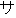 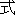 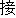 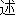 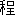 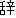 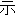 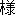 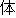 |
| 3 | 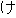 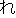 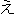 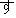   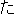  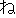 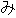 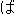 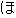 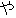 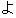  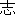 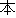  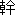 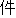 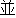 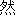 |
| 4 | no, |
| 5 | no, , , , , , 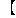 , , , , , , , , ,  , , , , , , |
| 6 | A(0), B(14), C(5) |
| 7 | yes, no |
| 8 | yes, no |
We would like to thank three anonymous reviewers for their insightful and constructive comments. We are also indebted to the two editors. Their insightful comments have greatly improved the paper.